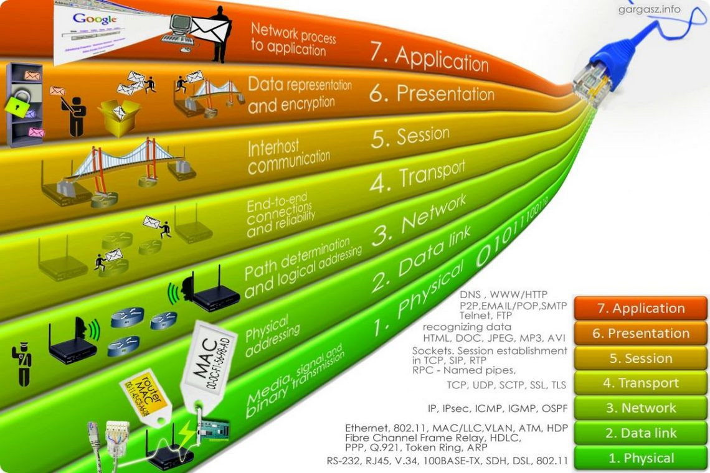

Простое пособие по сетевой модели OSI для начинающих
Открытая сетевая модель OSI (Open Systems Interconnection model) состоит из семи уровней. Что это за уровни, как устроена модель и какова ее роль при построении сетей — в статье.
Модель OSI является эталонной. Эталонная она потому, что полное название модели выглядит как «Basic Reference Model Open Systems Interconnection model», где Basic Reference Model означает «эталонная модель». Вначале рассмотрим общую информацию, а потом перейдем к частным аспектам.
Сетевая модель OSI имеет семь уровней, иерархически расположенных от большего к меньшему. То есть, самым верхним является седьмой (прикладной), а самым нижним — первый (физический). Модель OSI разрабатывалась еще в 1970-х годах, чтобы описать архитектуру и принципы работы сетей передачи данных. Важно помнить, что данные передаются не только по сети интернет, но и в локальных сетях с помощью проводных или беспроводных соединений.
В процессе передачи данных всегда участвуют устройство-отправитель, устройство-получатель, а также сами данные, которые должны быть переданы и получены. С точки зрения рядового пользователя задача элементарна — нужно взять и отправить эти данные. Все, что происходит при отправке и приеме данных, детально описывает семиуровневая модель OSI.
На седьмом уровне информация представляется в виде данных, на первом — в виде бит. Процесс, когда информация отправляется и переходит из данных в биты, называется инкапсуляцией. Обратный процесс, когда информация, полученная в битах на первом уровне, переходит в данные на седьмом, называется декапсуляцией. На каждом из семи уровней информация представляется в виде блоков данных протокола — PDU (Protocol Data Unit).
Рассмотрим на примере: пользователь 1 отправляет картинку, которая обрабатывается на седьмом уровне в виде данных, данные должны пройти все уровни до самого нижнего (первого), где будут представлены как биты. Этот процесс называется инкапсуляцией. Компьютер пользователя 2 принимает биты, которые должны снова стать данными. Этот обратный процесс называется декапсуляция. Что происходит с информацией на каждом из семи уровней, как и где биты переходят в данные мы разберем в этой статье.

Начнем с самого нижнего уровня. Он отвечает за обмен физическими сигналами между физическими устройствами, «железом». Компьютерное железо не понимает, что такое картинка или что на ней изображено, железу картинка понятна только в виде набора нулей и единиц, то есть бит. В данном случае бит является блоком данных протокола, сокращенно PDU (Protocol Data Unit).
Каждый уровень имеет свои PDU, представляемые в той форме, которая будет понятна на данном уровне и, возможно, на следующем до преобразования. Работа с чистыми данными происходит только на уровнях с пятого по седьмой.
Устройства физического уровня оперируют битами. Они передаются по проводам (например, через оптоволокно) или без проводов (например, через Bluetooth или IRDA, Wi-Fi, GSM, 4G и так далее).